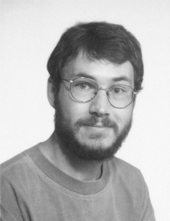

|
Curriculum Vitae

Biographical Details
|
Name:
|
Allan George Hanbury
|
| |
|
|
Address:
|
Pattern Recognition and Image Processing Group (PRIP)
Vienna University of Technology
Favoritenstraße 9/1832
A-1040 Vienna
Austria |
|
Telephone:
|
+43 (0)1 58801 18359
|
|
Fax:
|
+43 (0)1 58801 18392
|
|
Internet e-mail:
|
Hanbury@prip.tuwien.ac.at
|
|
Web Page:
|
http://www.prip.tuwien.ac.at/~hanbury
|
| |
|
|
Born:
|
5 March 1974 in George, South Africa
|
|
Nationality:
|
Irish
|
|
Languages:
|
English
French
German
Afrikaans
|
-
-
-
-
-
|
Mother Tongue
Fluent
Fluent
Good
|
Employment
From October 2002:
Position: Assistant Professor (Univ. Ass.)
Institution: Pattern Recognition and Image Processing Group (PRIP), Vienna University of Technology
From May 2002 to September 2002:
Position: Post-Doctoral Researcher
Institution: Pattern Recognition and Image Processing Group (PRIP), Vienna University of Technology
University Education
1998 to 2002:
Institution: Ecole Nationale Supérieure des Mines de Paris
Centre: Centre de Morphologie Mathématique
Degree: PhD (Doctorat en Morphologie Mathématique)
Thesis Title: Mathematical Morphology on the Unit Circle, with applications to hues and to oriented textures (in French).
Supervisor: Professor J. Serra
1996 to 1998:
Institution: University of Cape Town
Degree: Master of Science (M.Sc.) in Physics
Thesis Title: "Generalised Fourier Analysis of Human Chromosome Images"
Supervisor: Associate Professor G. N. Robertson
1995:
Institution: University of Cape Town
Degree: Bachelor of Science (Honours) in Physics (awarded with distinction)
1992 to 1994:
Institution: University of Cape Town
Degree: Bachelor of Science (awarded with distinction in Physics
and Applied Mathematics)
Publications
Books
A. Hanbury, Mathematical Morphology on the Unit Circle: with applications to hues and to oriented textures, PhD Thesis, Centre de Morphologie Mathématique, Ecole des Mines de Paris, March 2002 (in French). PDF
W. G. Kropatsch, R. Sablatnig and A. Hanbury (Eds.), Pattern Recognition Proceedings of the 27th DAGM Symposium, Springer, 2005.
Journal Articles
A. Hanbury and J. Serra, Mathematical Morphology in the CIELAB
Space, Image Analysis and Stereology, Vol. 21, No. 3, pages 201-206,
2002.
PDF
D. Chetverikov and A. Hanbury, Finding Defects in Texture using
Regularity and Local Orientation, Pattern Recognition, Vol. 35, No. 10,
pages 2165-2180, October 2002.
Zipped Postscript
A. Hanbury and J. Serra, Morphological Operators on the Unit
Circle, IEEE Transactions on Image Processing, Vol. 10, No. 12,
pages 1842-1850, December 2001.
PDF. © IEEE 2001.
Invited Chapter
A. Hanbury, Mathematical Morphology Applied to Circular Data,
In: Advances in Imaging and Electron Physics, Ed. P. W. Hawkes, Academic Press,
Vol. 128, pages 123-205, 2003.
Conferences with Proceedings
A. Hanbury, Analysis of Keywords Used in Image Understanding
Tasks, Proceedings of the OntoImage Workshop 2006, Genoa,
Italy. PDF
B. Micusik and A. Hanbury, Automatic Image Segmentation by
Positioning a Seed, Proceedings of the European Conference on Computer
Vision (2006), Graz, Austria.
PDF
©
Springer-Verlag.
L. Szumilas, B. Micusik and A. Hanbury, Texture Segmentation
through Salient Texture Patches, Proceedings of the 11th Computer
Vision Winter Workshop (2006), Telc, Czech Republic.
PDF
F. H. Seitner and A. Hanbury, Fast Pedestrian Tracking based on
Spatial Features and Colour, Proceedings of the 11th Computer
Vision Winter Workshop (2006), Telc, Czech Republic.
PDF
S. Kuthan and A. Hanbury, Extraction of Attributes, Nature and
Context of Images, Proceedings of the 11th Computer Vision Winter
Workshop (2006), Telc, Czech Republic. PDF
A. Hanbury and B. Marcotegui, Waterfall Segmentation of Complex
Scenes, Proceedings of the ACCV 2006, Hyderabad, India. PDF
©
Springer-Verlag.
B. Micusik and A. Hanbury, Supervised Texture Detection in
Images, Proceedings of the CAIP 2005, Versailles, France.
PDF
©
Springer-Verlag.
B. Micusik and A. Hanbury, Steerable Semi-Automatic Segmentation of
Textured Images, Proceedings of the SCIA 2005, Joensuu, Finland.
PDF
©
Springer-Verlag.
A. Hanbury, U. Kandaswamy and D. A. Adjeroh,
Illumination-invariant Morphological Texture Classification,
Proceedings of the 7th International Symposium on Mathematical
Morphology, Paris, France. PDF
©
Springer-Verlag.
B. Micusik and A. Hanbury, Semi-Automatic Segmentation of
Textured Images, Proceedings of the 10th Computer Vision Winter
Workshop, Zell an der Pram, Austria. PDF
A. Hanbury, The Morphological Top-Hat Operator Generalised to
Multi-channel Images, ICPR 2004, Cambridge, UK. PDF
A. Hanbury, J. Marchadier and W. G. Kropatsch, The Redundancy
Pyramid and its Application to Image Segmentation, ÖAGM 2004,
Hagenberg, Austria. PDF
H. Pottmann, T. Steiner, M. Hofer, C. Haider and A. Hanbury, The
Isophotic Metric and its Application to Feature Sensitive Morphology
on Surfaces, ECCV 2004, Prague, Czech Republic.
P. Kammerer, A. Hanbury and E. Zolda, A Visualisation Tool for
Comparing Paintings and their Underdrawings, EVA 2004, Florence,
Italy.
PDF
A. Hanbury, Highlight detection by 2D-histogram Analysis,
CGIV 2004, Aachen, Germany.
J. Marchadier, W. G. Kropatsch and A. Hanbury, Homotopic Transformations
of Combinatorial Maps, DGCI 2003, Naples, Italy.
PDF.
©
Springer-Verlag.
A. Hanbury, P. Kammerer and E. Zolda, Painting Crack Elimination Using
Viscous Morphological Reconstruction, ICIAP 2003, Mantua, Italy.
PDF. © IEEE 2003.
A. Hanbury and J. Serra, Colour Image Analysis in 3D-polar
Coordinates, DAGM 2003, Magdeburg, Germany.
PDF. ©
Springer-Verlag.
A. Hanbury, A 3D-polar Coordinate Colour Representation Well Adapted
to Image Analysis, SCIA 2003, Göteborg, Sweden.
PDF. ©
Springer-Verlag.
A. Hanbury and W. G. Kropatsch, Colour Statistics for Matching in
Image Databases, ÖAGM 2003, June 2003, Laxenburg,
Austria. PDF
A. Hanbury, Circular Statistics Applied to Colour Images,
8th Computer Vision Winter Workshop, February 2003, Valtice,
Czech Republic. PDF
A. Hanbury and J. Serra, Analysis of Oriented Textures using
Mathematical Morphology, ÖAGM 2002,
September 2002, Graz, Austria. PDF
A. Hanbury, The Taming of the Hue, Saturation and Brightness Colour
Space, 7th Computer Vision Winter Workshop, February 2002,
Bad Aussee, Austria. PDF
A. Hanbury and J. Serra, Mathematical Morphology in the HLS Colour
Space, 12th British Machine Vision Conference, September 2001,
Manchester, United Kingdom (best poster prize).
A. Hanbury and J. Serra, Mathematical Morphology in the L*a*b* Space, 8th European Congress for Stereology and Image Analysis, September
2001, Bordeaux, France.
A. Hanbury and F. Gardeux, A Quantitative Description of Wood Texture, 5th International Conference on Quality Control By Artificial
Vision, May 2001, Le Creusot, France. PDF
L. Kaunda and A. Hanbury, How students synthesise research literature
and cite references in a science research paper, in SAARMSE Proceedings.
Ed. Jaap Kuiper, Grahamstown: Rhodes University (1999).
Other Conferences and Presentations
A. Hanbury, Classification du Bois par la Couleur, (Wood Classification
by Colour), Spring School on Colour Imaging, Ecole des Mines d'Alès, March
2001, Pau, France.
A. Hanbury and J. Serra, Morphologie Mathématique et Textures Orientées, (Mathematical Morphology and Oriented Texture), Journée de l'ISS, February
2001, Paris, France
A. Hanbury and F. Gardeux, Description de la couleur et de la Texture
du bois par vision artificielle, (Description of the colour and texture
of wood by artificial vision), Journée "Signal et Image pour le Contrôle en
Industrie", May 2000, Le Creusot, France (poster)
A. Hanbury and J. Serra, Morphological Operators on the Unit Circle, Frontiers of Mathematical Morphology, April 2000, Strasbourg, France
A. Hanbury and J. Serra, La classification automatique du bois selon
les critères de couleur et de texture, (Wood classification using colour
and texture criteria), Journée de l'ISS, February 2000, Paris, France
A. Hanbury and D. Brookes, A New Laboratory Course for Physics Majors, South African Institute of Physics Conference, 1998, Cape Town, South
Africa.
Technical Reports
A. Hanbury, Review of Image Annotation for the Evaluation of
Computer Vision Algorithms, Technical Report PRIP-TR-102, PRIP,
T.U. Wien, 2006. PDF
L. Szumilas and A. Hanbury, Segment Feature Co-occurrence based
Texture Detection, Technical Report PRIP-TR-99, PRIP, T.U. Wien,
2005. PDF
A. Hanbury and J. Serra, A 3D-polar Coordinate Colour Representation
Suitable for Image Analysis, Technical Report PRIP-TR-77, PRIP,
T.U. Wien, 2002. PDF
A. Hanbury and J. Serra, Mathematical Morphology in the L*a*b* Colour Space, Technical Report N-36/01/MM, Centre de Morphologie Mathématique, Ecole des Mines de Paris, 2001. PDF
A. Hanbury, Lexicographical Order in the HLS Colour Space, Technical Report N-04/01/MM, Centre de Morphologie Mathématique, Ecole des Mines de Paris, 2001. PDF
Course material
A. Hanbury, Mathematical Morphology: from Erosion to Watersheds,
11th Summer School on Image Processing (SSIP), West
University of Timişoara, Romania, 2003. PDF
A. Hanbury, Colour Image Processing, 11th Summer School on
Image Processing (SSIP), West University of Timişoara, Romania, 2003.
PDF
A. Hanbury, Morphologie Mathématique sur le Cercle Unité avec
Applications
aux Teintes, (Mathematical Morphology on the Unit Circle with Applications
to Hues), Spring School on Colour Imaging, Ecole des Mines d’Alès, March 2001,
Pau, France
A. Hanbury and D. Brookes, PHY104W Laboratory Manual, Physics
Department, University of Cape Town, 1997 and 1998.
The following notice applies to the IEEE copyrighted material made
available on this page:
"© IEEE. Personal use of this material is permitted. However, permission to reprint/republish this material for advertising or promotional purposes or for creating new collective works for resale or redistribution to servers or lists, or to reuse any copyrighted component of this work in other works must be obtained from the IEEE."
|